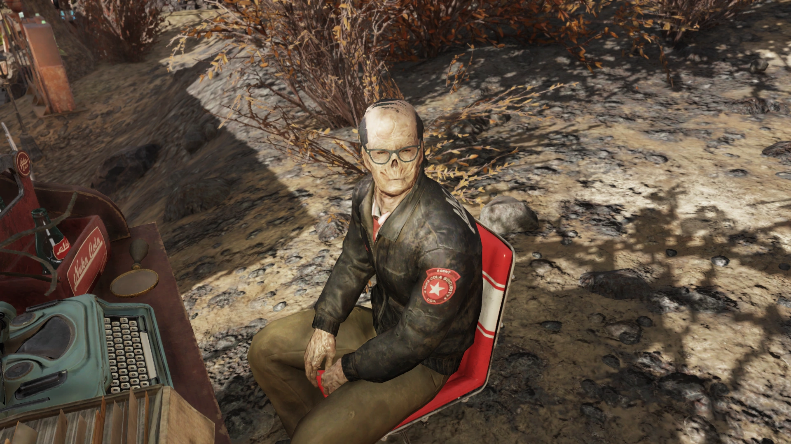
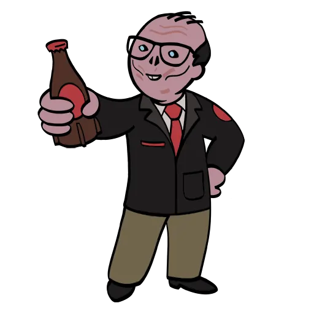
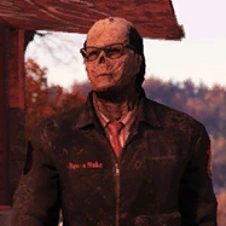

Leo Petrov
レオ・ペトロフ — ヌカ・コーラ社の元セキュリティオフィサー
でも、あとどれだけ時間が残されていたか…それを知っていたかった。」
概要
レオ・ペトロフはヌカ・コーラ社の元セキュリティオフィサーであり、グールとなった人物である。
Fallout 76のアパラチアで出会える同居人の一人。
第11シーズン「Nuka-World on Tour」のランク35報酬として解放された。
後に「Mutation Invasion」アップデートで設計図が追加され、サミュエルから金塊で購入可能となった。
背景

レオの幼少期についてはほとんど知られていないが、子供の頃に父親から暴力を受けていたことが示唆されている。
レオは「自分は子供を殴ったり叱りつけたりはしなかった。自分の父親についてはそうとは言えないが…少なくともその点だけは」と語っている。
また、写真に興味があることも示唆されており、「別の人生では写真家になっていたかもしれない」と述べている。
レオ・ペトロフはかつてヌカ・コーラ社のセキュリティオフィサーだった。
ワシントンD.C.に家を所有していたが、国中の工場やオフィスを調査して企業スパイを見つけ出し、内部情報の漏洩を封じるという仕事の性質上、家にいる時間はほとんどなかった。
ほぼ常に出張生活を送っており、個人的な時間はほとんど残されなかった。
2067年頃、息子のローマンが生まれた。
妻との間には結婚生活上の問題があり、最後に話した時、妻はレオが仕事と結婚しているようなものだと感じ、離婚を決意した。
妻は息子を連れて自分の母親の元で暮らすと告げた。
ヌカ・コーラ社の福利厚生により、レオと家族にはVaultのスペースが提供されていたが、大戦の日、レオは家から遠く離れた場所にいた。
レオは大戦を生き延び、爆弾投下後は放浪を始めたが、時折アパラチアに戻ってくるようになった。
家族がどうなったかは今も知らない。
2104年、巡回カーニバル「Nuka-World on Tour」がアパラチアに設営された頃、レオは再びアパラチアにやってきた。
彼はヌカ・コーラに情熱を注いでおり、史上最高の飲み物だと考えている。
プレイヤーとのインタラクション
レオはエッセンシャルNPCであり、同居人としてC.A.M.P.に配置できる。
専用家具は「レオのデスク」。
ベンダーとして各種アイテムを販売する。
デイリーバフ：ヌカ・インスピレーション
レオには「ヌカ・インスピレーション」というデイリーボーナスがある。
1日1回、特定のヌカ・コーラを渡すことで、種類に応じた効果を60分間受けられる。
| ヌカ・コーラの種類 | 効果 |
|---|---|
| ヌカ・コーラ（クラシック） | Charisma +2 |
| ヌカ・チェリー | Endurance上昇 |
| ヌカ・コーラ・クランベリー | 経験値 +5% |
| ヌカ・コーラ・ダーク | ステルス強化 |
| ヌカ・コーラ・オレンジ | 放射線耐性上昇 |
| ヌカ・コーラ・クァンタム | HP上昇 |
| ヌカ・コーラ・ツイスト | Luck上昇 |
| ヌカ・コーラ・ワクチン | 病気耐性上昇 |
| ヌカ・コーラ・ワイルド | Perception上昇 |
| ヌカ・グレープ | AP上昇 |
その他のインタラクション
Vault居住者はヌカ・コーラに関する自分の体験をレオと話し合うことができる。
「スコーチ病を自分の血で治した話を聞きたい？」
レオは感心しつつも嫌悪感を示す。
Vault居住者がカノーハ・ヌカ・コーラ工場を使ってワクチンを大量生産したことを聞くと、「ヌカ・コーラの安全基準には確実に反しているが、ワクチンの大量生産法としては天才的だ」と認める。
「ヌカ・コーラ・スコーチド」を渡すと、「これにはあなたの血が入っているのか？微量だといいが。見た目に反して、私はグールであって吸血鬼ではない」と返す。
「ヌカシャインを知っているか？」
レオはそれがひどそうだと思い、無認可のヌカ・コーラ製品を認めない。
VTUの学生が強いアルコール飲料を作っていたと聞くと、「問題がある。商標権の侵害でもある。昔だったら作戦ごと潰していた」と語る。
ビッグ・アルのタトゥーパーラーのスピークイージーと酒のテスト用ロボブレイン「Biv」の話を聞くと、「タトゥーパーラーのスピークイージー？興味深い！」と好奇心を見せる。
レシピを渡そうとすると、「聞かなかったことにする。無認可のヌカ・コーラの密造品には関わりたくない。ヌカ・コーラ・ダークで十分だ」と断る。
ヌカシャインそのものを渡すと、「なんてこった！無認可のヌカ・コーラ製品だと？よこしなさい、適切な時に"処分"してやる…なんだこの匂いは」と、実は欲しがっていることをほのめかす。
「ヌカ・コーラ・クァンタム・パワーアーマー塗装の設計図を見つけた」
レオはブラック・マウンテン兵器工場のTNTドーム3号に興味を示す。
「あの設計図を追跡するのは私の調査の一部だった。限定品で、ヌカ・コーラのイベント用に作られたものだ」と語る。
TNTドーム3号がヌカ・コーラの所有する唯一のロッカーだったと明かし、「従業員が資金を横領してこのロッカーを購入し、機密品を隠すのに使ったのだろう」と推理する。
「これであの謎は解決だ。正直、あなたなしではできなかった。コールドケースを抱えたまま気が滅入っていた。あなたは素晴らしいヌカ・コーラのセキュリティオフィサーになれただろう。犯罪を解決し、人々を助ける——それがあなたに向いている」と感謝を述べる。
「Nuka-World on Tourが来ているのを聞いた？」
レオは来る前に訪れたと述べ、公式イベントではないものの素晴らしい時間を過ごしたと語る。
名言集
登場作品
レオ・ペトロフはFallout 76のNuka-World on Tourアップデートにのみ登場する。
舞台裏
SkyBox Labsの開発者であるマイケル・ベンチュラがレオのライターを務めた。
マイケルのLinkedInプロフィールによると、レオは著名なNPCコンパニオンとして開発され、複数の選択肢を持つ会話ツリーとライト・アフィニティシステムが実装された。
マイケルはVO（ボイスオーバー）セッションの監督も行い、Papyrusスクリプトを活用して動的な条件分岐を作成した。
ギャラリー


レオ・ペトロフは、Fallout 76の同居人の中でも異色の存在ですね。
ヌカ・コーラ社のセキュリティオフィサーという、いかにもFalloutらしい企業戦士としての過去を持ちながら、グールとなった現在の姿には深い哀愁が漂っています。
仕事に人生を捧げたことで家族を失い、大戦の日には家から遠く離れていた——その「もしあの時、有給を取っていたら」という後悔は、ポスト・アポカリプスの設定だからこそ一層重く響きますね〜。
息子ローマンの名前をつぶやく台詞は、本当に切ない。
でも彼の魅力はそれだけじゃなくて、ヌカ・コーラへの異常なまでの愛情と職業的プライドが最高に面白い！
ヌカシャインを渡した時の「聞かなかったことにする」からの、実物を渡すと「よこしなさい…なんだこの匂いは」って小声で言うところとか、もう企業人の矜持がバッキバキに崩れてて笑えます。
ブラック・マウンテン兵器工場のTNTドーム3号のコールドケースが解決される流れも、プレイヤーがゲーム内で実際にあのロッカーキーの謎解きを経験した人ならニヤリとする展開ですよね。
ブラザーフッド・オブ・スティールへの冷静な皮肉も、彼の知性を感じさせる名台詞。
C.A.M.P.にいると落ち着いた紳士的な雰囲気で居心地が良く、ヌカ・コーラを渡すだけでバフがもらえるシステムも実用的で嬉しいところです。
This article was created by translating and editing Leo Petrov from Nukapedia: The Fallout Wiki.
Licensed under the Creative Commons Attribution-Share Alike License (CC BY-SA 3.0).
コミュニティ維持のため、寄付を受け付けております。
> COMMENTS